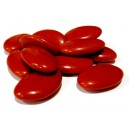
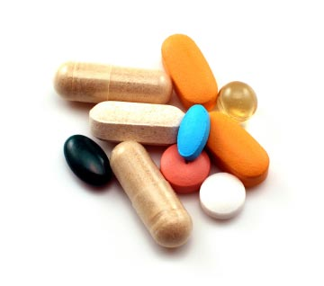
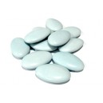

Calidad
Servicio
Soporte



Suplementos Alimenticios
El crecimiento de su línea de productos naturales se merece la manufactura de la más alta calidad.
Para sus necesidades de aprovisionamiento de suplementos nutricionales en forma de polcos, tabletas, cápsulas, grageas u otros sólidos orales necesitará un fabricante que le resuelva el problema.
 Micrometrix está equipado y listo a cumplir sus objetivos de febricación, nuestra experiencia única de 35 años en el desarrollo y la manufactura de este tipo de productos, dentro de los estándares de calidad y los procedimientos adecuados de manufactura (cGMP) la garantizarán el logro y cumplimiento de sus expectativas dentro de un ambiente industrial de calidad farmacéutica.
Farmacéuticos, Línea Humana
La industria Farmacéutica moderna ha requerido el diseño de nuevos fármacos que porten beneficios adicionales a los pacientes, como son el facilitarles la medicación, haciendo nuevos productos que requieran menos tomas al día y sin embargo mantengan los niveles sanguíneos del fármaco dentro de los parámetros terapéuticos, sin necesidad de estar tomando pastillas o cápsulas cada 4 horas con el riesgo de olvido o interferencias que le impidan cumplir su tratamiento (patent compliance) adecuadamente
Medicamentos Veterinarios
Nuestro comprimiso con el reino animal, sustento de los seres humanos, implica dar el mismo tratamieno que a los productos alopáticos para el hombre, que al final será el destinatario de los productos derivados de ellos y requieren formas farmacéuticas diseñadas especialmente para sus tratamientos, tanto en el aspecto terapéutico como alimentício.
Remedios Herbolarios
La elaboración de remedios herbolarios, por ser productos tradicionales cada día más populares, requiere de un área independiente.
Micrometrix cuenta con una nueva instalación independiente notificada a COFEPRIS, en la que puede elaborar esta nueva linea de productos en sus presentaciones de sólidos orales.
La herbolaria mexicana rica en variedad y efectividad, ofrece un amplio mercado de oportunidades por sus cualidades tradicionales reconocidas.

Remedios Herbolarios y Farmacéuticos.
35 Años de Experiencia en
Desarrollo y Maquila